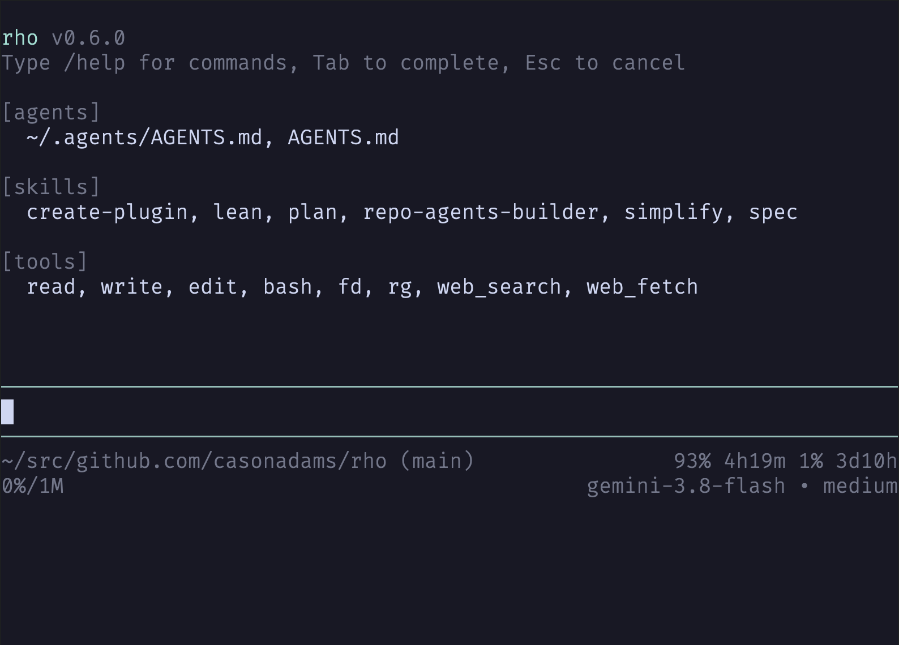

Zero telemetry, zero bloated runtimes. 9 native agent tools, interactive session picker, standard MCP integration, and one-shot lifecycle hooks.
Engineered for focus: upward-expanding multiline editor, non-intrusive modals, collapsible reasoning, and live status line metrics.

93% 4h19m 1% 3d10h).
Actual captures from macOS Terminal
rho collects nothing. No telemetry, no background analytics, no tracking pixels, and no phone-home pings.
rho contains zero analytics SDKs, crash reporters, or tracking code. We do not monitor, log, or transmit your commands, prompts, or usage habits.
Your prompts, code, and completions travel directly from your machine to your chosen AI provider (Anthropic, OpenAI, Gemini, Ollama, etc.). No intermediary proxy servers or relays.
All configuration files, API credentials, session transcripts, branch trees, and context caches reside exclusively on your local disk in ~/.config/rho and ~/.local/share/rho.
Connect external capabilities using open Model Context Protocol servers, and guard execution with deterministic one-shot process hooks in any programming language.
Connect any community or custom MCP tool server via standard JSON in ~/.agents/mcp.json or workspace .mcp.json. Works across Claude Desktop, Cursor, Zed, and rho.
Drop executable scripts into .rho/hooks/ (Bash, Python, Node, Rust). Intercept tool calls, rewrite arguments, repair errors, or halt execution without long-lived background daemons.
Hooks run in isolated process groups with strict timeouts. Unhandled errors or timeouts fail closed. Hooks can also instruct rho to prompt the user via native TUI dialogs.
rho ships with powerful command-line features for interactive coding, headless scripting, session recovery, and configuration management.
Browse previous coding sessions interactively with rho -r, resume with rho --resume <id>, or continue the working directory's last session with rho -c.
# Interactive picker
rho -r
# Continue last session
rho -cManage your external tool servers directly through the CLI. Audit connections, test discovery, and self-update rho.
rho mcp list
rho mcp test filesystem
rho mcp add db "https://mcp.example.com"
rho update
Inspect live models and capabilities with rho models, view or edit configuration keys with rho config, or run one-shot prompts with rho -p.
rho models
rho config
rho -p "audit dependencies"
Embed rho into IDE extensions or remote harnesses with rho --mode rpc. Concurrent JSON-lines server supporting streaming, mid-turn steering, and interactive tool approval dialogs.
# Launch stdio RPC mode
rho --mode rpc
# Non-blocking concurrent turnsIntelligent context monitoring that automatically triggers compaction before token exhaustion. Features atomic split-turn protection, cumulative file ledgers, and bounded summary limits.
# Manual compaction command
/compact "focus on tests"
# Proactive auto-compact at threshold
Explore conversation turn history with /tree, label key checkpoints, rewind to prior turns, or fork clean sub-branches with automatic abandoned-branch summarization.
# Interactive history tree
/tree
# Rewind or branch from turn
/rewind 4rho includes native tools specifically designed and bounded for coding agents.
Safe offset/limit chunking, line numbering, and automatic image sniffing.
Creates or overwrites files with automatic missing directory creation.
Targeted, exact text replacements with strict single-match verification.
Process group isolation, timeout watchdog, and binary output sanitization.
Fast gitignore-aware workspace file discovery with smart-case regex.
Line-oriented content search, skips binaries, and bounds large result sets.
Structured web search results and domain-filtered URL discovery.
Clean extraction of markdown, plain text, HTML, CSV, or feeds.
Single-turn tool batching with in-engine regex line filtering and context.
Open standards and verified recipes to extend rho without custom runtimes.
Query issues, review pull requests, and inspect commit history via standard Model Context Protocol.
Bounded local filesystem access outside the current workspace with standard security policies.
A simple 10-line POSIX shell script in .rho/hooks/on_tool_call that blocks destructive bash commands.